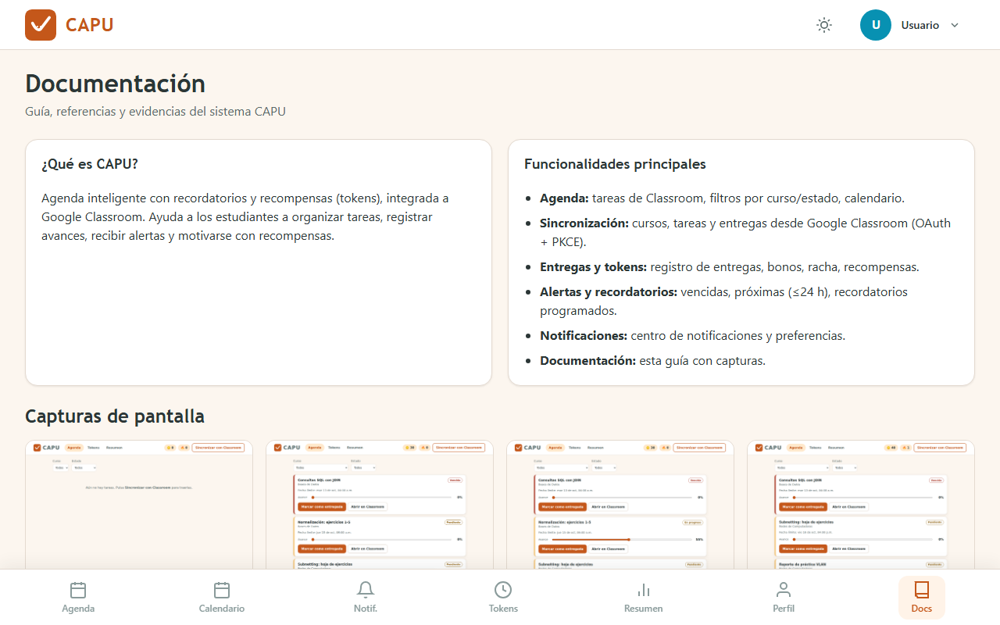

1. Cronograma y estado
| Fase | Periodo | Estado | Observación |
|---|---|---|---|
| Etapa I - Calidad | 23 sep - 6 oct 2026 | 100% | Plan de calidad completado |
| Etapa II - Planificación | 7 oct - 27 oct 2026 | 100% | Plan y estimación |
| Etapa III - Desarrollo | 28 oct - 14 nov 2026 | 100% | Integración y funciones principales |
| Etapa IV-V - Cierre | 15 nov - 26 nov 2026 | 100% | Pruebas, correcciones y entrega |
2. Incidencias y acciones correctivas
| Incidencia | Impacto | Acción correctiva | Estado |
|---|---|---|---|
| Endpoints sin aislamiento por usuario | Alto | Filtrado por id_usuario y validación de dueño | Resuelto |
| OAuth no emitía sesión JWT al frontend | Alto | Generar JWT en callback y capturarlo en frontend | Resuelto |
| Prueba admin OAuth con import inválido | Medio | Usar fetch global de Node | Resuelto |
3. Evidencia visual de seguimiento

Explicación detallada: Esta captura evidencia el seguimiento del producto: el módulo de resumen muestra indicadores del desempeño del usuario. Sirve como apoyo visual para verificar que el sistema reporta métricas y estado general de las tareas.

Explicación detallada: Se observa la página de documentación dentro de CAPU. Esto evidencia que el proyecto incluye soporte documental accesible para el usuario, con explicación de funcionalidades y capturas.